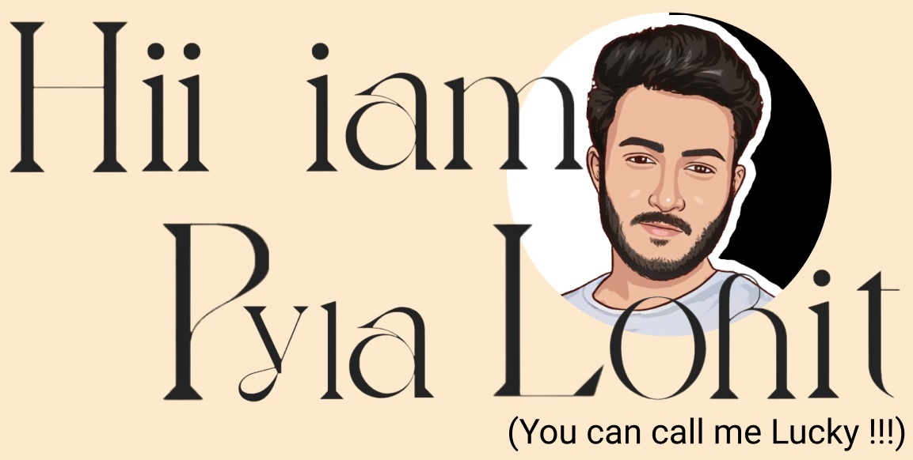
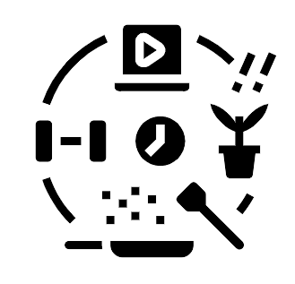

COMPUTER SCIENCE GRADUATE studying at Vignan's Institute of Information Technology currently looking for good opportunities to utilize my strong analytical skills and technical knowledge to work collaboratively.
EDUCATION
I've done my schooling at SRI PRAKASH VIDYANIKETAN, Intermediate at SRI CHAITANYA COLLEGE , and finally pursuing my BTech 3rd year inVIGNAN'S INSTITUTE OF INFORMATION TECHNOLOGY.
TECHNICAL SKILLS
My technical skills include (Programming) C, C++ , PYTHON
(Web Development) HTML ,CSS ,PYTHON DJANGO ,POSTGRESSQL , FIGMA
being a cyber sec enthusiast I gained some knowledge and experience on Computer Networks, cisco packet tracer, and Basics of Ethical Hacking using Linux.
ORGANIZATIONS
I am the Web Developer in technical team and content developer of the ACM(Association for Computing Machinery) students chapter organization, as an active member, I had acquired organizational skills and gained some experience in giving seminars, community services, and hosting hackathons collaboratively as I am a member of the VIGNITE 2.0 hackathon organizing committee.
 HOBBIES AND INTRESTS
I am interested in TRAVELLING and exploring new places, when I am free I like to do FREE-STYLE-FITNESS as part of my lifestyle, play GAMES, and HANG OUT WITH FRIENDS.